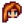
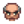
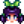
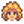
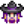
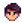

Barátság

|
Hiányos fordítás Ezt a cikket vagy szakaszt nem fordították le teljesen magyarra. Üdvözlünk az oldal fordításával. |
Barátokká válhat a falusiakkal, amint barátságai elmélyülnek, a falusiak párbeszédvonalai barátságosabbá válnak, a #Szív eseményeknek nevezett jelenetek következnek be, és a falusiak ajándékokat küldenek postán.
Barátság mechanika
Pontrendszer
Minden falusi rendelkezik egy barátság pontszámmal, amely normál falusi esetén egy tízszintes, házastárs) esetén pedig egy tizennégy szintes szívmérővel mutatkozik:

Minden szív 250 barátság pont és az összes szívmérőt megtekintheti a játékmenü közösségi fülén.
Amikor beszélgetünk a falusiakkal, a portréjuk mellett egy kör tűnik fel. Ennek színe függ az adott falusival kapcsolatos szívek számától. A kék szín 0, a zöld 2, a sárga 4, a piros 6, a bíbor 8 szívet jelent, a 10-14 szív között pedig egy bíbor szív jelenik meg. Az egérmutatót a kör fölé húzva a tízbből elért szívek számát jeleníti meg, abban az esetben, ha ez illetővel nem vagyunk házasok.

Az alábbi módokon lehet barátságpontokat gyűjteni:
- Beszélgetés falusiakkal (+10 ha egy Falusi egy speciális animáció közepén van, mint például edzés vagy kamera használata, különben +20; naponta csak egyszer szerezhet pontot)
- Egy tárgyszállítási feladat teljesítése (+150)
- Olyan ajándékot adsz nekik, amit szeretnek, kedvelnek vagy semlegesen viszonyulnak hozzájuk (lásd [[#[#ajándékok|ajándékok]])
- Egy héten belül egy második szeretett, kedvelt vagy semleges ajándék adása (lásd [[#[#ajándékok|ajándékok]])
- Meghívás a moziba (+200, ha szeretik, +100, ha kedvelik) (lásd Moziszínház)
- Egy kis harapnivaló vásárlása számukra (+50 ha szeretik, +25 ha szeretik) (lásd Moziszínház)
- Bizonyos döntések meghozatala a szívesemények
You can lose friendship points by:
- Not talking to a Falusi (see Decay)
- Giving them a gift they dislike or hate (see Gifts)
- Hitting them with a slingshot (-30, can only score once per day)
- Rummaging through a Garbage Can when they're within 7 tiles of you (-25, except Linus who doesn't mind). They will speak to indicate that they have seen you. If more than one is within 7 tiles of you when you rummage, only one will speak and lose friendship.
You may enter a Falusi's bedroom when the relevant heart meter reads at least 2 hearts. This level improves access to the Falusi for talking and gifting.
Friendship points can increase up to a maximum of 2749 (one point less than 11 hearts) for Falusis whose heart meters show as 10 hearts on the Social tab.
With marriage candidates, the meter pauses at 8 hearts. It will not increase unless you give the candidate a bouquet to indicate your romantic interest. If you do so, that meter is unlocked and operates as before until ten hearts is reached. (Note that after reaching 8 hearts but pre-bouquet, friendship points can continue to rise to just below 9 hearts (2249 points) and will not decay until the candidate is given a bouquet.) It is possible to give a bouquet to any and all marriage candidates, and raise all their friendship levels to 10 hearts, without damage to your relationships with other romantic partners, so long as you have not yet proposed. (If you have proposed, are married, or have a roommate, there is a chance your fiancé/spouse/roommate may become jealous.)
Dating all bachelors or bachelorettes may result in a Group Ten Heart event, which does not affect friendship, but may prevent you from giving gifts for one week afterwards.
When you propose marriage, the heart meters of all other marriage candidates convert to the behavior of all other Falusis, since none are marriage candidates any longer. However, their entries in the social tab still show whether you have previously given them a bouquet. (Also, after marriage you can still activate romantic heart events with these other marriage candidates if you have previously given them a bouquet.) After the marriage ceremony, your spouse's meter unlocks once again and can rise as far as 14 hearts.
Hanyatlás
Each day, not talking to a Falusi will slightly decrease their friendship unless their heart meter is full.[1] Marriage doesn't stop decay with your spouse.
| Relationship | Decay rate | When decay stops |
|---|---|---|
| Married | -20/day | Never |
| Gave bouquet | -10/day | 10 hearts |
| Pre-bouquet | -2/day | 8 hearts |
| Not romanceable | -2/day | 10 hearts |
Ajándékozás
You can give each Falusi one gift per day, up to two gifts per week, as indicated by the checkboxes in the social tab. You can review the Falusi's gift preferences by clicking on their row in the Social Tab to open the "Gift Log". This log keeps track of gifts given, and gift preferences learned via Secret Notes and dialogues with their family and friends.
For the purpose of gift-giving, the week begins on Sunday. If you give a Falusi two gifts in a week, their heart meter will rise an additional ten friendship points on Sunday morning when you wake up.
You can always give a birthday gift to a Falusi, even if you've already given that character two other gifts that week.
You can give your spouse one gift every day of the week.
Each Falusi has individual Kedvelt and Nem kedvelt, which affects how many friendship points are gained or lost when you give them a gift. The friendship points are multiplied on their birthday (×8) and Feast of the Winter Star secret gifting event (×5):
| Gift Taste | Normal | Winter Star (×5) | Birthday (×8) |
|---|---|---|---|
| Love | +80 | +400 | +640 |
| Like | +45 | +225 | +360 |
| Neutral | +20 | +100 | +160 |
| Dislike | -20 | -100 | -160 |
| Hate | -40 | -200 | -320 |
If a gift is liked or loved, the points gained will be further affected by quality of the item:
| Quality | Multiplier | Effect | |
|---|---|---|---|
| Normal | ×1 | +0% | |
| Silver | ×1.1 | +10% | |
| Gold | ×1.25 | +25% | |
| Iridium | ×1.5 | +50% | |
Note that a no-star loved item always gives more points than an iridium-star liked item.[2] The equation is Event Multiplier × Preference × Quality Multiplier, where Event Multiplier is 1 (any day), 5 (your Winter Star recipient), or 8 (their birthday), Preference is 80 or 45, and Quality Multiplier is 1, 1.1, 1.25, or 1.5. (For neutral, disliked, or hated gifts, the equation is simply Event Multiplier × Preference.)
Szív események
Gaining friendship with each Falusi will unlock unique events (see each Falusi's article for the requirements). It's possible to permanently miss some events, though most events can be viewed at your leisure or out of order.
Románc
- Fő cikk: Marriage
Some Falusis can be romanced by the player (see marriage candidates). Once you've reached eight hearts with an eligible Falusi, you can give them a bouquet to unlock the ninth and tenth hearts. Once you've reached ten hearts with an eligible Falusi, you can give them a Mermaid's Pendant to propose. Alternatively, at 10 hearts, you can give Krobus a Void Ghost Pendant to indicate you'd like to move in together as roommates.
After you've moved in with or married a Falusi, they get an expanded fourteen-heart friendship meter. At 12.5 hearts (3125 points), they will randomly give you a stardrop.
Küldetések
- Fő cikk: Küldetések
The game-opening „Bemutatkozás” quest, when completed, increases by 100 the player's friendship points with each of the 28 starting townspeople. (The Wizard is not included among these Falusis.)
Completing an Tárgyszállítás quest awards 150 Friendship points with the requesting Falusi.
Fesztiválok
- Fő cikk: Festivals
You earn friendship points for speaking to Falusis at Festivals, the same as any non-festival day. Three festivals can have special effects on friendship points with Falusis:
- The Flower Dance increases friendship 250 points (one heart) with your dance partner, unless the partner is locked at eight hearts beforehand.
- The Luau can increase or decrease friendship points with most Falusis (all except Sandy, the Wizard, Krobus, and the Dwarf).
- Your gift to your secret friend at the Feast of the Winter Star is worth 5x the normal amount of friendship points.
In addition, giving gifts to Falusis at the Night Market will increase friendship with them, in the same way as it does outside of festivals.
Hirdetőtábla csomagok
- Fő cikk: Bundles
Completing all Bulletin Board bundles improves the player's friendship rating with non-datable Falusis by two hearts (500 points). Note that this applies only to non-datable Falusis whom you have met in person. Falusis who do not show on the "Social" tab of the player menu and Falusis whose names appear as "???" will not receive 500 points.
Note that you do not have to understand Dwarvish for the Dwarf to receive 500 points. In contrast, you do have to understand Dwarvish for gifts to affect friendship with the Dwarf.
Univerzális ajándékok
- See also: List of All Gifts
Below are lists of items that are universally loved, liked, considered neutral, disliked, or hated. Note that there are some exceptions and that individual Falusi tastes override any universal tastes.
Preferences for Eggs, Milk, Fruit, and most Foraged Items vary by Falusi, and are generally not listed here.
Note that Dinosaur Eggs are considered Artifacts and not Eggs for gifting purposes.
Univerzális szereti
Azon dolgok listája, amiket minden Falusi szeret ajándékba kapni. Ezek a tárgyak garantáltan a legtöbb pontot (80) adják a kapcsolat szintjére, de nehéz lehet őket megszerezni.
Amikor olyan ajándékot kapnak, amit szeretnek, akkor a Falusiak általában egy szívecskés párbeszédbuborékkal válaszolnak. 
Kivéve
 Haley Utált Prizmás töredék.
Haley Utált Prizmás töredék. Penny Utált Nyúlláb.
Penny Utált Nyúlláb.
Univerzális kedveli
Bár kevesebb barátság pontot ad, mint egy szeretett ajándék, a kedvelt ajándék is 45 pontot ad, és általában könnyebben megszerezhető.
- All Artisan Goods (Except for Oil which is disliked, and Void Mayonnaise which is hated)
- All Cooking (Except for Fried Egg and Bread, which are universally neutral, and Strange Bun and Seafoam Pudding which are hated)
- All Flowers (Except for Poppy which is hated)
- All Foraged Minerals (Except Quartz which varies by Falusi)
- All Fruit Tree Fruits
- All Gems (Except Prismatic Shard which is Loved)
- All Vegetables including Fiddlehead Fern (Except Hops, Tea Leaves and Wheat which are Universal Normál, and Unmilled Rice which is a Universal Dislike.)
 Élet elixír
Élet elixír Juharfaszirup
Juharfaszirup Piña Colada
Piña Colada
Kivéve
Below is an Expandable table of all Universal Kedvelt exceptions, listed by Falusi. (See also: List of All Gifts)
Univerzális normál
Azoknak a tárgyaknak a listája, amik semleges választ váltanak ki a Falusiak-ból. Ezek 20 barátság pontot adnak, de vannak kivételek.
Kivéve
 Caroline Kedvelt Tea levelek.
Caroline Kedvelt Tea levelek.-  Elliott Szeretett Kacsatoll.
 Emily Szeretett Gyapjú.
Emily Szeretett Gyapjú. Evelyn Utált Kagyló and Korall.
Evelyn Utált Kagyló and Korall. Harvey Kedvelt Kacsatoll, Nem kedvelt Kenyér, Utált Korall, Nautilusz kagyló, and Szivárvány kagyló.
Harvey Kedvelt Kacsatoll, Nem kedvelt Kenyér, Utált Korall, Nautilusz kagyló, and Szivárvány kagyló. Leah Szeretett Szarvasgomba, Nem kedvelt Tükörtojás, Utált Kenyér.
Leah Szeretett Szarvasgomba, Nem kedvelt Tükörtojás, Utált Kenyér. Maru Utált Szarvasgomba.
Maru Utált Szarvasgomba.- Penny Nem kedvelt Kacsatoll and Gyapjú, Utált Komló.
 Sandy Kedvelt Gyapjú.
Sandy Kedvelt Gyapjú.
Univerzális nem kedveli
Ez azoknak a tárgyaknak a listája, amelyek 20 ponttal csökkentik a barátságot, ha ajándékba adják. Vannak kivételek.
- All Building Materials -- Battery Packs, Clay, Fiber, Hardwood, Stone, and Wood
- All Bombs
- All Crafted Floors & Paths
- All Fences
- All Fertilizer
- All Fish (kivéve a Kagyló, ami Univerzálisan semleges, valamint a Ponty és a Csiga, ami Univerzálisan Utált)
- All Geode Minerals
- All Geodes
- All Seeds beleértve Fruit Tree Saplings, Tea levelek, Acorns, Maple Seeds, and Pine Cones
- All Sprinklers
- All Tackle
- Legtöbb Fém -- Szén, Réz rúd, Arany rúd, Arany érc, Irídium rúd, Irídium érc, Vas rúd, és Finomított kvarc
Kivéve
 Abigail Szeretett Gömbhal; Utált Kagyló
Abigail Szeretett Gömbhal; Utált Kagyló Clint Szeretett Arany rúd, Irídium rúd, Omni geóda; Kedvelt Réz rúd, Vas rúd; Semleges Szén, Arany érc, Irídium érc, Finomított kvarc
Clint Szeretett Arany rúd, Irídium rúd, Omni geóda; Kedvelt Réz rúd, Vas rúd; Semleges Szén, Arany érc, Irídium érc, Finomított kvarc Demetrius Semleges All Fish (kivéve Ponty & Csiga)
Demetrius Semleges All Fish (kivéve Ponty & Csiga) Törpe Szeretett Lemon Stone and Omni geóda; Kedvelt Barlangi répa; Semleges Szoláris esszencia, Űr esszencia
Törpe Szeretett Lemon Stone and Omni geóda; Kedvelt Barlangi répa; Semleges Szoláris esszencia, Űr esszencia- Elliott Szeretett Homár; Kedvelt Polip, Tintahal; Semleges All Other Fish (kivéve Ponty & Csiga); Utált Tengeri uborka
- Evelyn Utált All Fish, Kagyló
-  George Utált Kagyló
- Haley Utált All Fish, Kagyló
- Harvey Kedvelt Újhagyma
-  Jas Utált Kagyló
 Krobus Szeretett Irídium rúd, Űr tojás; Kedvelt Arany rúd
Krobus Szeretett Irídium rúd, Űr tojás; Kedvelt Arany rúd- Leah Kedvelt Vízsodorta fa, Újhagyma; Utált Űr tojás
 Linus Kedvelt Újhagyma; Semleges All Fish (kivéve Ponty & Csiga)
Linus Kedvelt Újhagyma; Semleges All Fish (kivéve Ponty & Csiga) Marnie Utált Kagyló
Marnie Utált Kagyló- Maru Szeretett Battery Pack, Arany rúd, Irídium rúd; Kedvelt Réz rúd, Vas rúd, Tölgyfa gyanta, Fenyőkátrány
-  Pam Semleges All Fish (kivéve Ponty, Polip, Csiga & Tintahal); Utált Polip, Csiga
- Penny Szeretett Sandfish
 Pierre Utált All Fish
Pierre Utált All Fish Robin Kedvelt Keményfa
Robin Kedvelt Keményfa Sam Szeretett Tigerseye; Utált Metal Goods
Sam Szeretett Tigerseye; Utált Metal Goods Sebastian Szeretett Obszidián, Űr tojás; Kedvelt Lepényhal; Semleges All Fish (kivéve Lepényhal, Ponty & Csiga); Utált Kagyló
Sebastian Szeretett Obszidián, Űr tojás; Kedvelt Lepényhal; Semleges All Fish (kivéve Lepényhal, Ponty & Csiga); Utált Kagyló Vincent Utált Kagyló
Vincent Utált Kagyló Willy Szeretett Catfish, Irídium rúd, Polip, Tengeri uborka, Tokhal; Kedvelt Arany rúd, Lingcod, Tiger Trout; Semleges All Other Fish (kivéve Ponty & Csiga)
Willy Szeretett Catfish, Irídium rúd, Polip, Tengeri uborka, Tokhal; Kedvelt Arany rúd, Lingcod, Tiger Trout; Semleges All Other Fish (kivéve Ponty & Csiga)-  Varázsló Szeretett Szoláris esszencia, Űr esszencia, Super Cucumber; Kedvelt All Geode Minerals
Univerzális utál
Ez azoknak a tárgyaknak a listája, amelyek 40 ponttal csökkentik a barátságot, ha ajándékba adják. Vannak kivételek.
Amikor olyan ajándékot kapnak, amit utálnak, akkor a Falusiak általában egy haragos párbeszédbuborékkal válaszolnak. 
- All Artifacts
- All Bait
- All Monster Loot (kivéve Solar Essence és Űr esszencia, ami nem kedvelt)
- All Trash (kivéve Driftwood, ami nem kedvelt)
Kivéve
- Abigail Nem kedvelt Cukor
- Törpe Kedvelt Dwarf Scroll I, Dwarf Scroll II, Dwarf Scroll III, Dwarf Scroll IV, Dwarvish Helm, and Dwarf Gadget
- Krobus Szeretett Űrmajonéz; Kedvelt Tengeri hab puding
- Leah Nem kedvelt Hínár
- Marnie Nem kedvelt Hínár
- Penny Szeretett Mák, Nem kedvelt Piros gomba
- Sam Kedvelt Joja Cola, Nem kedvelt Hínár
-  Shane Nem kedvelt Hínár
- Vincent Szeretett Csiga
- Willy Kedvelt Tengeri hab puding
- Varázsló Nem kedvelt Slime
Teljesítmények
There are 6 Achievements related to Friendship:
- A New Friend (Reach a 5-heart friend level with someone)
- Best Friends (Reach a 10-heart friend level with someone)
- The Beloved Farmer (Reach a 10-heart friend level with 8 people)
- Cliques (Reach a 5-heart friend level with 4 people)
- Networking (Reach a 5-heart friend level with 10 people)
- Popular (Reach a 5-heart friend level with 20 people)
Hivatkozások
Előzmény
- 1.3: The Golden Pumpkin is now a universal love instead of a universal hate. Added new item, the Pearl, as a universal love.
- 1.4: You can now increase friendship by talking with NPCs at Festivals. Removed glitch where a birthday gift would remove a checkbox on the social tab. Added Gift Logs, accessed by clicking on the Falusi in the Social tab. Changed jealousy of player's spouse to only apply to marriage candidates who have received a bouquet. Harvey now Nem kedvelt many cooked dishes. Willy is neutral towards Maki Roll, Sashimi, and Dish O' The Sea. Vincent Szeretett Snails. Dwarf Kedvelt Cave Carrot. Vincent & Jas like Honey and Jelly. Sebastian Utált Mead.
- 1.4.4: Mermaid's Pendant and Void Ghost Pendant can no longer be given as gifts at the Feast of the Winter Star. Jas & Vincent now hate Triple Shot Espresso. Dwarf now Szeretett Lemon Stone.